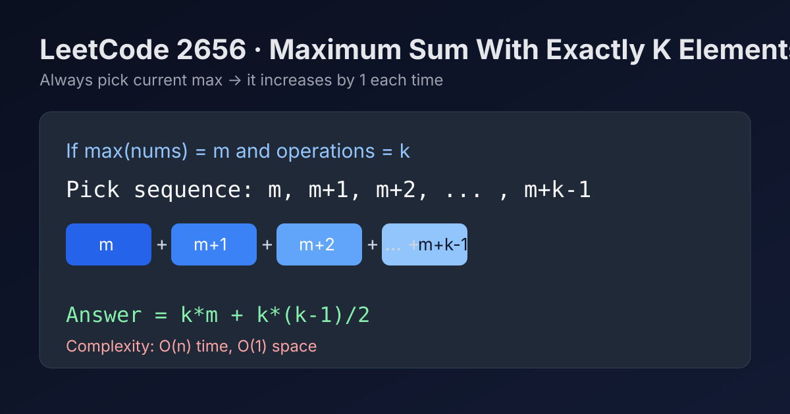

LeetCode 2656: Maximum Sum With Exactly K Elements (Arithmetic Progression from Current Maximum)
LeetCode 2656GreedyMathToday we solve LeetCode 2656 - Maximum Sum With Exactly K Elements.
Source: https://leetcode.com/problems/maximum-sum-with-exactly-k-elements/

English
Problem Summary
You are given an integer array nums and an integer k. In each of exactly k operations, choose an element from nums, add it to your score, then increase that chosen element by 1. Return the maximum possible score.
Key Insight
To maximize score, always pick the current maximum element. If initial maximum is m, chosen values become m, m+1, ..., m+k-1, which is an arithmetic progression.
Algorithm
- Find m = max(nums).
- Sum arithmetic progression: m + (m+1) + ... + (m+k-1).
- Use formula: k * m + k * (k - 1) / 2.
Complexity Analysis
Let n be the length of nums.
Time: O(n) (to find maximum).
Space: O(1).
Common Pitfalls
- Simulating all k picks with sorting/heap when formula is enough.
- Integer overflow in languages with fixed integer size (use wider type when constraints are larger).
- Forgetting that the chosen element increases immediately, which creates consecutive terms.
Reference Implementations (Java / Go / C++ / Python / JavaScript)
class Solution {
public int maximizeSum(int[] nums, int k) {
int maxVal = 0;
for (int x : nums) {
maxVal = Math.max(maxVal, x);
}
return k * maxVal + k * (k - 1) / 2;
}
}func maximizeSum(nums []int, k int) int {
maxVal := 0
for _, x := range nums {
if x > maxVal {
maxVal = x
}
}
return k*maxVal + k*(k-1)/2
}class Solution {
public:
int maximizeSum(vector<int>& nums, int k) {
int maxVal = *max_element(nums.begin(), nums.end());
return k * maxVal + k * (k - 1) / 2;
}
};class Solution:
def maximizeSum(self, nums: List[int], k: int) -> int:
m = max(nums)
return k * m + k * (k - 1) // 2var maximizeSum = function(nums, k) {
let maxVal = 0;
for (const x of nums) {
if (x > maxVal) maxVal = x;
}
return k * maxVal + (k * (k - 1)) / 2;
};中文
题目概述
给定整数数组 nums 和整数 k。你要执行恰好 k 次操作：每次选择一个元素，把它加入分数，然后将该元素加 1。返回可得到的最大总分。
核心思路
为了让总分最大，每次都选当前最大值。若初始最大值是 m，那么连续 k 次选择的值就是 m, m+1, ..., m+k-1，构成等差数列。
算法步骤
- 找到 m = max(nums)。
- 目标和为 m + (m+1) + ... + (m+k-1)。
- 直接套公式：k * m + k * (k - 1) / 2。
复杂度分析
设数组长度为 n。
时间复杂度：O(n)（扫描最大值）。
空间复杂度：O(1)。
常见陷阱
- 用堆或反复排序去模拟 k 次选择，复杂度不必要地变高。
- 某些语言中若题目约束更大，可能出现整型溢出，应使用更大整数类型。
- 忽略“选完立即 +1”这一点，导致等差项写错。
多语言参考实现（Java / Go / C++ / Python / JavaScript）
class Solution {
public int maximizeSum(int[] nums, int k) {
int maxVal = 0;
for (int x : nums) {
maxVal = Math.max(maxVal, x);
}
return k * maxVal + k * (k - 1) / 2;
}
}func maximizeSum(nums []int, k int) int {
maxVal := 0
for _, x := range nums {
if x > maxVal {
maxVal = x
}
}
return k*maxVal + k*(k-1)/2
}class Solution {
public:
int maximizeSum(vector<int>& nums, int k) {
int maxVal = *max_element(nums.begin(), nums.end());
return k * maxVal + k * (k - 1) / 2;
}
};class Solution:
def maximizeSum(self, nums: List[int], k: int) -> int:
m = max(nums)
return k * m + k * (k - 1) // 2var maximizeSum = function(nums, k) {
let maxVal = 0;
for (const x of nums) {
if (x > maxVal) maxVal = x;
}
return k * maxVal + (k * (k - 1)) / 2;
};
Comments